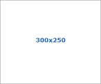

<!-- 
Copyright 2014 Google Inc. All rights reserved.

Licensed under the Apache License, Version 2.0 (the "License");
you may not use this file except in compliance with the License.
You may obtain a copy of the License at

    http://www.apache.org/licenses/LICENSE-2.0

Unless required by applicable law or agreed to in writing, software
distributed under the License is distributed on an "AS IS" BASIS,
WITHOUT WARRANTIES OR CONDITIONS OF ANY KIND, either express or implied.
See the License for the specific language governing permissions and
limitations under the License.


This code is an example implementation of how to implement YouTube geo-search
search and search filters via established APIs.  The application itself is directed toward the use
case of journalists trying to discover citizen journalism on YouTube.   It integrates with the Google Maps API to plot 
the upload location of geo-tagged video results.

Author:  Stephen Nicholls, May 9, 2016
-->

<!DOCTYPE html>
<html>
  <head>
    <title>Geo Search Tool - Viewer</title>
    <meta name="google-site-verification" content="OyQYNNg0Pi2XCjudMGKl4XDn3oT7HTCFZCYxZ08HiPA" />
    <link rel="stylesheet" type="text/css" href="css/styles.css">
    <script src="//ajax.googleapis.com/ajax/libs/jquery/1.10.1/jquery.min.js"></script>
    <script src="//ajax.googleapis.com/ajax/libs/jqueryui/1.10.3/jquery-ui.min.js"></script>
    <script src="js/view.js"></script>
 
<!-- Facebook Meta Data -->  	
<meta property="og:type" content="video.other" />
<meta property="og:url" content="http://www.geosearchtool.com" />
<meta property="og:locale" content="en_us" />
<meta property="og:site_name" content="Geo Search Tool" />
<meta property="og:title" content="Search for Videos by Location!!!" /> 
<meta property="og:image" content="http://www.geosearchtool.com/images/joshTR_1068.png" />
<meta property="og:description" content="The Geo Search Tool allows you to search YouTube based on location and time, allowing citizen journalism and videos with little to no views to surface. "/>	
<!-- schema.org tags for Google Search  -->
<script type="application/ld+json">
{
  "@context" : "http://schema.org",
  "@type" : "Product",
  "name" : "Geo Search Tool",
  "url" : "http://www.geosearchtool.com",
   "logo": "http://www.geosearchtool.com/images/joshTR_1068.png",
  "sameAs" : [
    "https://www.facebook.com/Geo-Search-Tool-693334990805336/",
    "https://twitter.com/nicholls314159"
  ]
}
</script>  
 
  </head>

<body>
	<table id='viewerTable' valign='middle'>
		<tr>
			<td valign='middle'>
				<table id='viewerTable' align='center' valign='middle' cellpadding="20"><tr><td></td></tr></table>
				<div id="showErrorsContainer2">
				      <div class="showErrors"></div>
      				</div>
			</td>
		</tr>
		
		<tr>
			<td>
			</td>
			<td  align='left' valign='middle'>
				<div id="videoPlayer"></div>
			</td>
			<td>
				<table>
					<tr><td  align='left' cellpadding='5'>
						<!--  Ads
						
						-->
					</td></tr>
					<tr><td>
					<div id="videoview-container">
        			    		<table class="tableOfVideoViewContentResults"></table>
          				</div>	
					</td></tr>
					<tr><td width="100%" cellpadding='10'>
						<form id="jt_search_form2" action="javascript:clickedSearchButton()">
              					<input id="search-button-back" type="submit" value="Back to Geo Search" align="right">
              					</form>
					</td></tr>
				</table>
			</td>
		</tr>
		<tr>
			<td></td>
		</tr>
	</table>
</body>

